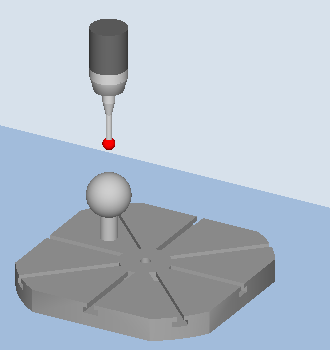
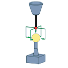

Funktion
Mit der Messvariante "Kinematik vermessen" (CYCLE996) ist es möglich, über ein Vermessen von Kugelpositionen im Raum die geometrischen Vektoren zur Definition der kinematischen 5-Achs-Transformation (TRAORI und TCARR) zu berechnen.
Die Vermessung erfolgt grundsätzlich so, dass mittels Werkstückmesstaster pro Rundachse drei Positionen einer Messkugel abgetastet werden. Die Kugelpositionen können nach Anwendervorgabe entsprechend den geometrischen Verhältnissen an der Maschine festgelegt werden. Die Kugelpositionen werden durch alleiniges Umpositionieren einer jeweils zu vermessenden Rundachse eingestellt.
Zum Einsatz des CYCLE996 bedarf es keiner exakten Kenntnis über die zu Grunde liegende Mechanik der Maschine. Um eine Vermessung durchführen zu können, sind keine Maßbilder und Aufbauzeichnungen der Maschine notwendig.
Sind die Vektoren der Maschine grob bekannt, sollten die Zeichnungsmaße in die Vektoren des Schwenkdatensatzes eingetragen werden und die Maschine mit aktivem orientierbaren Werkzeugträger (TCARR) oder aktiver 5-Achs-Transformation (TRAORI) vermessen werden. Siehe auch Programmierbeispiel am Ende des Kapitels.
Weitere Informationen: Programmierhandbuch NC-Programmierung
Mögliche Einsatzbereiche
Die Messvariante "Kinematik messen" ermöglicht eine Bestimmung der transformationsrelevanten Daten für kinematische Transformationen mit enthaltenen Rundachsen (TRAORI, TCARR).
-
Neubestimmung von Schwenkdatensätzen
-
Inbetriebnahme der Maschine,
-
Einsatz von schwenkbaren Spannmitteln als TCARR
-
-
Überprüfung von Schwenkdatensätzen
-
Service nach Kollisionen,
-
Überprüfung der Kinematik während des Bearbeitungsprozesses
-
Es können Kinematiken mit manuellen Achsen (manuell verstellbare Rundtische, schwenkbare Spanneinrichtungen) ebenso vermessen werden wie Kinematiken mit NC-gesteuerten Rundachsen.
Bei Start des CYCLE996 muss ein Schwenkdatensatz mit den Grunddaten (Kinematiktyp siehe Programmierhandbuch SINUMERIK 840D sl/840D/840Di sl Zyklen, CYCLE800) parametriert sein. Die Vermessung selbst wird ohne aktive kinematische Transformation durchgeführt.
Voraussetzungen
Folgende Voraussetzungen müssen zum Einsatz des CYCLE996 (Kinematik vermessen) erfüllt sein:
-
kalibrierter 3D Messtaster (Messtaster Typ 710)
-
montierte Kalibrierkugel
-
orientierter Werkzeugträger eingerichtet (allgemeines MD 18088: $MN_MM_NUM_TOOL_CARRIER > 0)
-
rechtwinklige, referenzierte Grundgeometrie der Maschine (X, Y, Z)
-
Die Rechtwinkligkeit bezieht sich auf die Werkzeugspindel und ist vorzugsweise mittels Messdorn oder mit dem Messzyklus CYCLE995 zu kontrollieren.
-
definierte Stellung der an der Transformation beteiligten Rundachsen
-
definierte normgerechte Verfahrrichtungen aller an der Transformation beteiligten Achsen nach ISO 841-2001 bzw. DIN 66217 (Rechte Handregel)
-
Linear- und Rundachsen müssen dynamisch optimal eingestellt sein. Dies gilt insbesondere, wenn die Maschine mit aktiven TRAORI Werkzeugorientierungen in der spannenden Bearbeitung ausführen soll.
-
Der Messtaster muss exakt kalibriert sein. Die kalibrierte Werkzeuglänge des Messtasters geht direkt in die berechneten Vektoren der Kinematik ein.
-
Beim Messen sollte die Messvariante Umkreisen der Kalibrierkugel mit Nachführen der Schaltrichtung angewendet werden.
| Hinweis |
|
Die Vektoren der gemessenen Kinematik werden nur in den Schwenkdatensatz eingeschrieben, wenn das Herstellerkennwort aktiv ist. Eine Kinematik kann nur dann korrigiert werden, wenn keine persistente Transformation aktiv ist. |
| | Maschinenhersteller Beachten Sie bitte die Hinweise des Maschinenherstellers. |
Messprinzip
Die Messvariante "Kinematik messen" verlangt grundsätzlich nach folgender Vorgehensweise:
Vermessung einer Rundachse
Vermessung einer zweiten Rundachse (wenn vorhanden)
Berechnung der Schwenkdatensätze (Kinematik berechnen)
Automatische oder bedienerunterstützte Aktivierung der berechneten Daten
Die dargestellte Reihenfolge ist vom Anwender (vorzugsweise Maschinenhersteller) sicherzustellen.
Ist die Position der Kalibrierkugel innerhalb der Maschine konstruktiv reproduzierbar vorgebbar, so kann der gesamte Ablauf der kinematischen Vermessung mittels CYCLE996 vorteilhaft als Teileprogramm hinterlegt werden. Damit kann der Anwender zu beliebigen Zeitpunkten eine Vermessung seiner Kinematik unter definierten Bedingungen durchführen.
Die Vermessung der Rundachse muss im Grundsystem der Maschine ausgeführt werden. Metrische Maschine mit G710 und Positionen in mm. "INCH"-Maschine mit G700 und Positionen in INCH.
|  |  |
Messen: Kinematik (CYCLE996), | Messen: Kinematik (CYCLE996), |
Vermessen der Kinematik
Ausgehend von der Grundstellung der Kinematik werden die beteiligten Rundachsen getrennt vermessen.
Die Reihenfolge der Vermessung Rundachse 1 oder Rundachse 2 ist beliebig. Hat die Maschinenkinematik nur eine Rundachse, wird diese als Rundachse 1 vermessen.
Basisdaten der Kinematik sind immer die Daten des orientierbaren Werkzeugträgers. Es kann die 1. dynamische 5-Achs-Transformation unterstützt werden, vorzugsweise sollte diese den Transformationstyp 72 (Vektoren aus TCARR Daten) haben.
Die Linear- und Rundachsen müssen vor dem Aufruf des Messzyklus CYCLE996
Die Vermessung erfolgt in jeder der gewählten Kugel- (Rundachs-) Positionen über die Parameter und den Aufruf des CYCLE996 .
Die Berechnung der Kinematik erfolgt über einen separaten parametrierten Aufruf des CYCLE996. .
Die Messergebnisse werden nach Abschluss der 3. Messung und der CYCLE996 Einstellung "Kinematik berechnen" auf die Ergebnisparameter _OVR[ ] geschrieben. Bei Anwahl der Funktion "Vektoren eintragen" (siehe
S_MVAR,S_TC) erfolgt die Ausgabe der Daten auf den eingerichteten Schwenkdatensatz (TCARR, TRAORI(1)).Ein Protokollfile mit den Messergebnissen, in einem entsprechenden Datenformat (Maschinendaten oder Daten TCARR), kann wahlweise ausgegeben werden.
| Hinweis |
Voraussetzungen Vermessen der Kinematik mit aktiven TRAORI oder aktiven TCARR
|
Eingabemasken "Kinematik"
Die komplette Messung und Berechnung der Vektoren einer Rundachse besteht aus drei Aufrufen des CYCLE996. Zwischen den Zyklenaufrufen muss die zu messende Rundachse vom Anwender umpositioniert werden. Die jeweils nicht zu vermessene Rundachse darf während der Messungen nicht umpositioniert werden. Die Linearachsen werden auf die Startpositionen P1, P2, P3 positioniert.
Über die jeweiligen Softkeys werden die 1. bis 3. Messung aufgerufen.
Am Ende der 3. Messung erfolgt mit dem Aufruf die Berechnung der Vektoren der gemessenen Rundachse. Voraussetzung ist, dass für die jeweilige Rundachse die 1. bis 3. Messung erfolgt ist und die entsprechenden Messergebnisse (Mittelpunkte der Kalibrierkugel) gespeichert sind. Die Vektoren der Maschinenkinematik sind dann vollständig berechnet, wenn beide Rundachsen vermessen sind. In der Ergebnisanzeige bzw. im Protokoll wird der Messzähler, Parameter _OVR[40] angezeigt.
Messung für eine Kinematik mit Schwenkkopf:
1. Messung P1 (Grundstellung) | 2. Messung P2 | 3. Messung P3 |
|  |  |  |
Bei der 2. und 3. Messung wird die zu vermessende Rundachse um einen beliebigen, möglichst großen Winkel verdreht. Die Position der Kalibrierkugel muss bei den Messungen ortsfest sein.
Ausgangsposition vor dem Messen
Die Vermessung einer Rundachse erfolgt durch 3 Aufrufe des CYCLE996 (Messung 1 bis 3).
Der Äquator der Kalibrierkugel muss mit der Messtasterkugel erreichbar sein. Die 1. Messung muss in Grundstellung der Kinematik erfolgen. Dreht bei einer Kopfkinematik (Gabelkopf) die 1. Rundachse ohne Versatz parallel zur Spindel, kann die Messung der 1. Rundachse mit angestelltem Messtaster erfolgen. Dabei steht die 2. Rundachse beim Vermessen der 1. Rundachse nicht in Grundstellung.
Die Startposition des Messtasters muss vom Anwender oder aus dem Anwenderprogramm angefahren werden. Der Messtaster muss in Richtung der Werkzeugorientierung (ORI) über dem höchsten Punkt der Kalibrierkugel vorpositioniert werden (Messtaster fluchtet mit Kugelmittelpunkt). Der Abstand (A) zur Kalibrierkugel, nach dem Anfahren der Startposition, sollte ungefaehr DFA sein.
| Hinweis |
Variante "Positionieren auf Kreisbahn"Bei der Variante "Positionieren auf Kreisbahn", erfolgt das Positionieren um jeweils 90 °, immer in mathematisch positiver Richtung. |
Position nach Messzyklus-Ende
Nach jeder Messung (1 bis 3) einer Rundachse steht der Messtaster über der Kalibrierkugel im Abstand von maximal dem Messweg DFA.